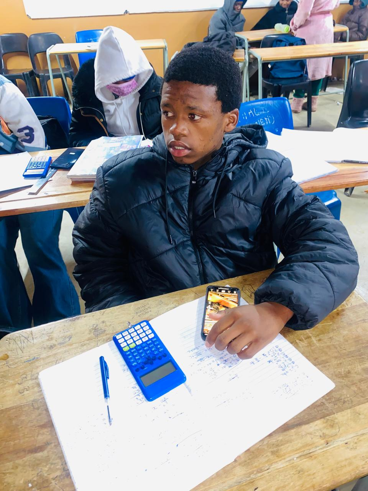
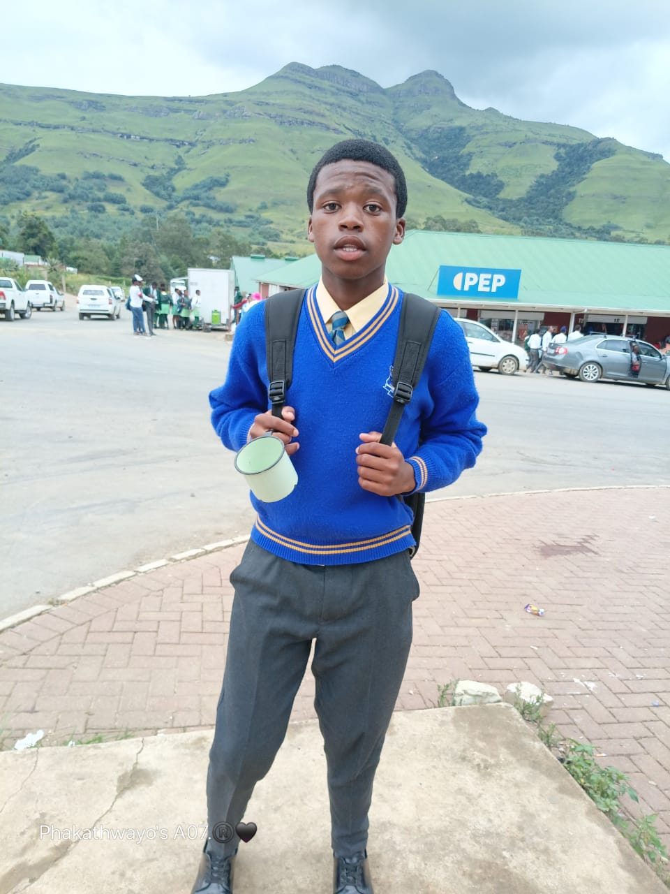
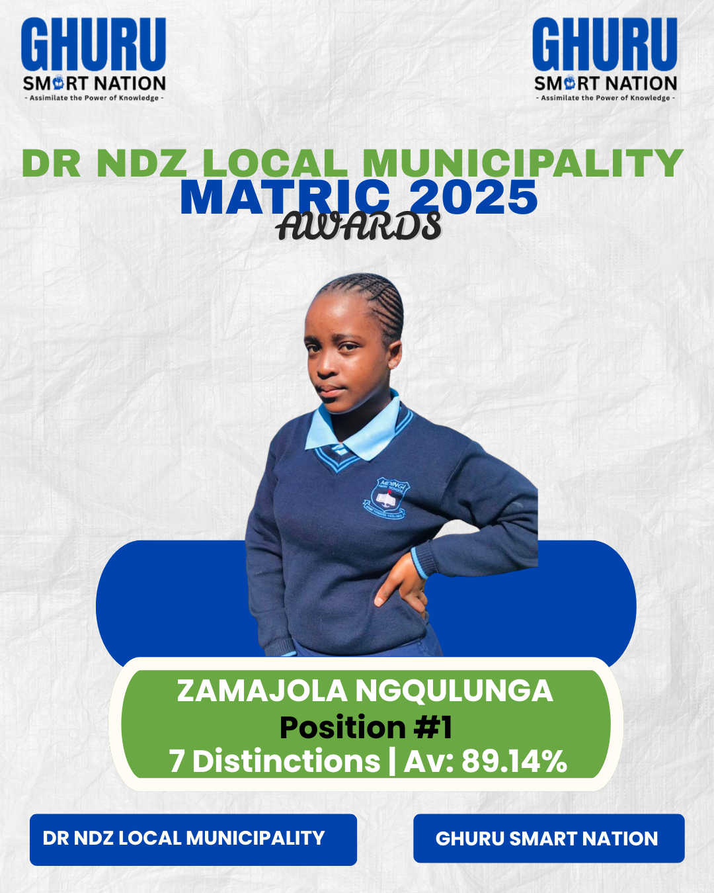
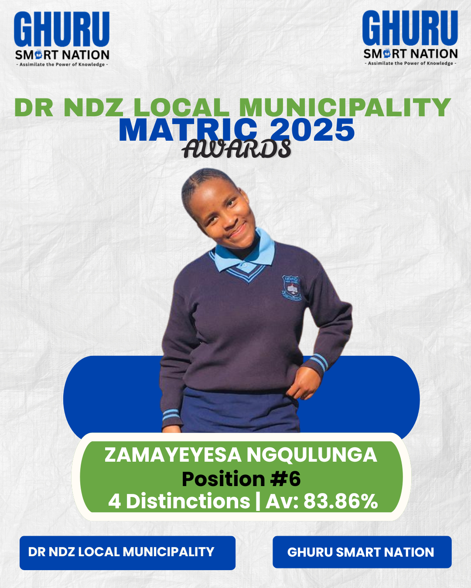
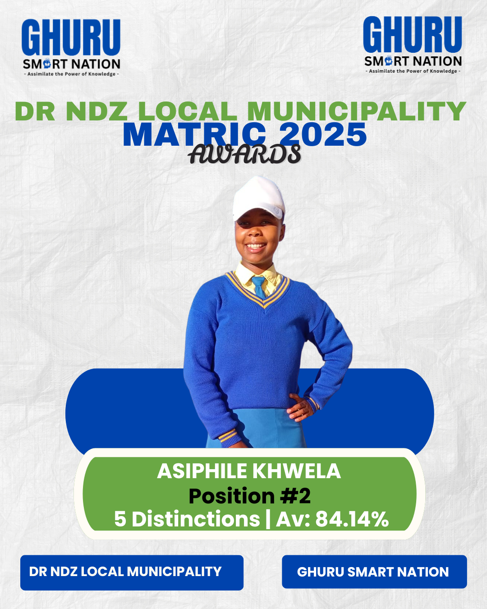
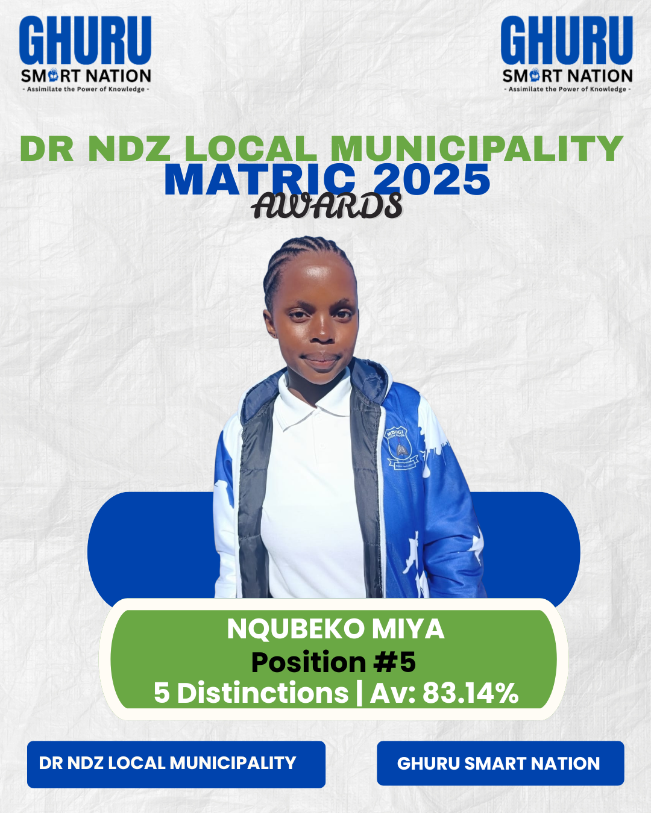
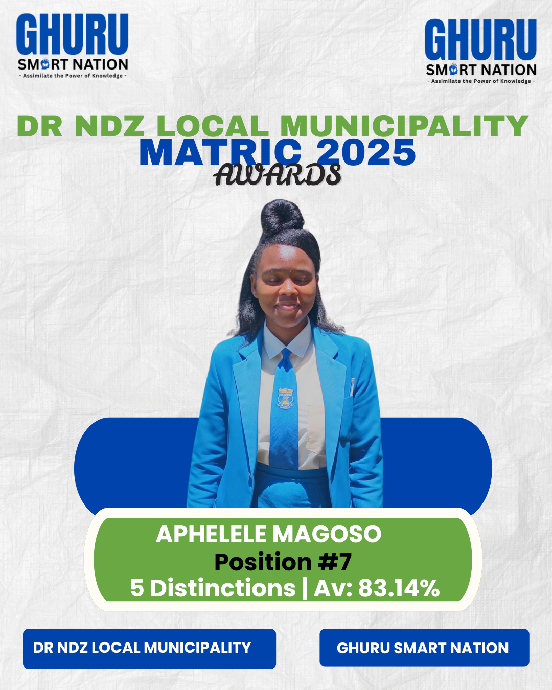

When the lights stay on until dawn and the calculators keep clicking — that is where magic happens. Our biggest cross night yet proved that belief, when multiplied by community, produces extraordinary results.
GHURU Cross Night Study Session — where dedication meets results
The Night That Redefined What Is Possible
There are study sessions, and then there are movements. Our Term 3 Cross Night was the latter. Over 300 learners gathered under one roof — not because they were forced to, but because they chose to. They chose to believe that one more hour, one more problem, one more revision session could be the difference between a pass and a distinction.
This was not just a tutoring session. This was a statement. A statement that learners across KwaZulu-Natal, Eastern Cape, Gauteng and Western Cape are hungry for success. A statement that when you provide the right environment — structured, supportive, and driven by belief — learners will show up in numbers that defy expectations.
300+
Learners Attended
10
Hours of Study
45
Tutors on Duty
What Made This Cross Night Different
Every cross night we host is special. But this one was different. The energy in the room was electric. Learners from Dumabezwe High, Mdingi High, Dingeka High, Dlangani School, and Masamini High sat side by side, sharing notes, solving problems together, and pushing each other to go further.
Our tutors — 45 experienced educators including varsity students who recently walked the matric path and employed teachers with 100% pass rates — moved from table to table, not lecturing from the front, but sitting beside learners. Diagnosing gaps. Patching foundations. Building confidence one problem at a time.
💡 The GHURU Difference
We don't replace school teachers. We amplify them. Our cross nights run alongside the incredible work that school teachers do every day — the early mornings, the extra classes, the weekend sessions. We add belief, knowledge, trust, and the kind of individual attention that overcrowded classrooms make difficult.
A Tribute to the School Teachers Who Make This Possible
Before we celebrate our results, we must celebrate the foundation. The school teachers at Dumabezwe High, Mdingi High, Dingeka High, Dlangani School, and Masamini High are the unsung heroes of every success story we tell.
These educators show up before sunrise. They stay after the bell rings. They sacrifice weekends for extra classes. They identify struggling learners and refuse to let them fall through the cracks. They are the first line of defence against failure — and they fight with everything they have.
"GHURU Smart Nation does not replace school teachers. We stand beside them. We add the belief, the knowledge, the trust, and the individual attention that transforms good learners into exceptional ones. Every distinction we celebrate is built on the foundation that school teachers laid."
— Mlondi Nzimande, Founder
Our cross nights are an extension of what happens in classrooms Monday to Friday. When school teachers cover the curriculum during the week, we provide the deep revision, the past paper practice, and the one-on-one clarification that cements understanding. When school teachers run extra classes on weekends, we provide the cross-night intensity that builds exam stamina. We are partners, not competitors.
The Subjects That Filled the Room
From Mathematics to Physical Sciences, from Accounting to Life Sciences, every subject table was packed. Learners brought their school notes, their textbooks, their past papers — and their questions. The kind of questions that only emerge when a learner has been thinking deeply, not just memorising.
Our tutors didn't just answer. They guided. They asked counter-questions. They made learners explain their own reasoning. They celebrated every "aha" moment like it was a goal in a World Cup final. Because to us, it is.


Learners fully engaged during GHURU study sessions — focus, determination, and the pursuit of excellence
From 6PM to 4AM: The Marathon of Belief
Cross nights are not for the faint-hearted. They are marathons. Starting at 6PM and running deep into the early hours, they test endurance, discipline, and commitment. But they also build something invaluable: the confidence that comes from knowing you have prepared.
At 2AM, when most people are asleep, our learners were still solving equations. At 3AM, they were still debating literary themes. At 4AM, they were still practising accounting entries. Not because they had to — because they had chosen to become the kind of learner who outworks everyone else.
🏆 The Result of Consistency
Cross nights are not a one-time event. They are part of a system of support that includes daily online classes (Monday to Sunday, 16:00–21:00), Homework Hour (Monday to Friday, 18:00–19:00), and weekend revision sessions. This consistency is what transforms 23% into 68%. This is what gets learners into university.
The Parents Who Believed
Behind every learner in that room was a parent who said yes. Yes to the late night. Yes to the travel. Yes to the belief that their child could be more than their current marks suggested. Parents who trusted us with their most precious investment — their child's future.
To those parents: we see you. We know the sacrifices you make. The fees you stretch to afford. The hope you carry. We do not take it lightly. Every learner in that room is a promise we intend to keep.
Looking Ahead: Term 3 and Beyond
As Term 3 progresses, the pressure mounts. Preliminary exams approach. University application deadlines loom. The matric clock is ticking. But our learners are not afraid. They are ready.
Because they have spent nights like this one building the foundation. They have tutors who know their names, their struggles, and their potential. They have a community that believes in them. And they have the quiet confidence that comes from knowing they have outworked their fears.
The next cross night is already being planned. And if this one taught us anything, it's that the number 300 is just the beginning.
108 Learners. One Dream. Varsity Applications 2026
We didn't just tutor them. We walked them to the university gates. 108 learners applied for tertiary education across four provinces — and the journey is only beginning.
GHURU Varsity Applications — guiding learners from the classroom to the campus
From the Classroom to the Campus
There is a moment in every learner's journey when the classroom ends and the future begins. For 108 of our learners, that moment came this May when we sat down with them — one by one — and helped them apply for university.
Not just any applications. Strategic applications. Applications informed by APS score analysis, career guidance, and a deep understanding of what each learner is capable of achieving. Applications to universities across Eastern Cape, Gauteng, KwaZulu-Natal, and Western Cape.
108
Learners Applied
4
Provinces Covered
100%
Support Rate
What It Takes to Apply for 108 Learners
Varsity applications are not simple. They require certified ID copies, certified Grade 11 or Matric results, email addresses, phone numbers, and carefully considered career choices. For a learner navigating this alone, it can be overwhelming. For 108 learners, it is a logistical mountain.
But we climbed it together. Our team worked through each application with patience and precision. We explained the difference between a BCom and a BSc. We helped learners understand which programmes matched their APS scores. We made sure no learner applied blindly — every choice was informed, every form was complete, every dream was taken seriously.
📋 What We Needed
Certified ID copies. Certified Grade 11 or Matric results. Email addresses and phone numbers. Career choices that matched both passion and potential. And most importantly — belief that these learners deserved a seat in a lecture hall.
The School Teachers Who Paved the Way
None of these 108 applications would have been possible without the incredible work of school teachers across our partner schools. Teachers who stayed after hours for extra classes. Teachers who ran weekend revision sessions. Teachers who identified learners with university potential and pushed them to believe in themselves.
At Dumabezwe High, teachers have been running Saturday Mathematics clinics for years. At Mdingi High, educators sacrifice Sunday afternoons for Physical Sciences revision. At Dingeka High, the staff room lights stay on until 6PM every weekday for learners who need extra help. At Dlangani School and Masamini High, teachers don't just teach — they mentor.
"GHURU Smart Nation exists because of the foundation that school teachers build. We don't replace them — we extend their reach. When a teacher has 50 learners in a class, they can't give each one the individual attention they deserve. That's where we step in. We add the belief, the knowledge, the trust, and the focused attention that turns potential into results."
— Mlondi Nzimande, Founder
Every one of those 108 applications represents a learner who was first seen by a school teacher. Who was first believed in by a school teacher. Who was first taught the basics by a school teacher. We are merely the bridge that carries them from the school gate to the university door.
The Provinces, The Dreams, The Future
Our learners applied across four provinces because their dreams know no borders. Some want to study Medicine at UKZN. Others want Engineering at UJ. Some are reaching for Education at Fort Hare. Others want Business at UWC.
Each application is a declaration. A declaration that a child from a rural KZN school can become a doctor. That a learner from an under-resourced community can become an engineer. That the postcode of your birth does not determine the destination of your future.
✓ The GHURU Promise
We don't stop at the application. We track every learner's acceptance. We help with bursary applications. We provide career guidance. We organise university visits. We are with them until they are seated in their first lecture.
The Parents Who Dared to Dream
Behind every application is a parent who said yes to a future they may never have had themselves. Parents who never went to university but want their children to. Parents who work multiple jobs to afford the R150–R400 monthly fee. Parents who trust us with their child's tomorrow.
To those parents: your courage is not unnoticed. Your sacrifice is not invisible. Every acceptance letter that arrives will carry your name on it, even if the university never knows it.
Online: 01 May 2026
Our varsity application support session was held online on 01 May 2026, making it accessible to learners across all four provinces. The online format meant that no learner was left out because of distance. A learner in the Eastern Cape could receive the same guidance as one in Gauteng.
This is the power of technology combined with human care. Our online classes run Monday to Sunday, 16:00–21:00, and our Homework Hour provides daily support from 18:00–19:00. The varsity application session was an extension of this commitment — going beyond subjects to address the whole learner.
What Happens Next
The applications are in. Now we wait. But we don't wait passively. We prepare. We continue tutoring. We continue revising. We continue believing. Because an application is just a door — what matters is whether the learner is ready to walk through it.
For the Grade 12 learners who applied, the focus now shifts to the final exams. For the upgrading learners, the journey continues. For everyone, the message is the same: we are with you until the end.
108 learners. 108 dreams. 108 futures that will be different because someone believed in them. That is what GHURU Smart Nation is about.
Zamajola, Zamayeyesa, Asiphile, Nqubeko, and Aphelele. Five learners. Five journeys. One undeniable truth: when belief meets hard work, distinctions follow.



DR NDZ Local Municipality Matric Awards 2025 — Top achievers from GHURU Smart Nation


More top achievers recognised at the DR NDZ Matric Awards 2025
Five Names. One Movement.
On a stage in the DR NDZ Local Municipality, five names were called. Not just any names — names that represent years of sacrifice, countless hours of study, and the quiet courage of learners who refused to give up on themselves. These are not just matric results. These are testaments to what happens when a community invests in its children.
Zamajola Ngqulunga — Position #1, 7 Distinctions, Average 89.14%. Asiphile Khwela — Position #2, 5 Distinctions, Average 84.14%. Nqubeko Miya — Position #5, 5 Distinctions, Average 83.14%. Zamayeyesa Ngqulunga — Position #6, 4 Distinctions, Average 83.86%. Aphelele Magoso — Position #7, 5 Distinctions, Average 83.14%.
Five learners. A combined 26 distinctions. An average that would make any school proud. But these numbers only tell part of the story.
26
Combined Distinctions
84.68%
Average of Top 5
5
Schools Represented
The School Teachers Who Built the Foundation
Before these learners ever walked into a GHURU session, they walked into classrooms led by extraordinary teachers. Teachers who arrived before the first bell. Teachers who stayed for extra classes when the day was supposed to end. Teachers who ran weekend revision sessions while their own families waited at home.
At the schools these learners come from — Dumabezwe High, Mdingi High, Dingeka High, Dlangani School, and Masamini High — the teaching staff does not see their job as a 9-to-5 obligation. They see it as a calling. They know that every learner who passes with a distinction is a life changed. Every learner who gets into university is a family lifted. Every learner who becomes a professional is a community transformed.
"These distinctions belong to the learners first, to their parents second, and to their school teachers third. GHURU Smart Nation is merely the amplifier. We take the foundation that school teachers build and we add the belief, the knowledge, the trust, and the individual attention that turns good learners into top achievers. We do not replace school teachers. We honour them."
— Mlondi Nzimande, Founder
The weekend classes. The after-school extra classes. The early morning revision sessions. The personal phone calls to parents when a learner is struggling. The extra worksheets printed with the teacher's own money. These are the invisible investments that produced these visible results. GHURU Smart Nation stands on the shoulders of these giants.
The GHURU Layer: What We Added
So what did GHURU Smart Nation contribute? We added four things that even the best school teachers struggle to provide in overcrowded classrooms:
Belief — The unwavering conviction that every learner can pass with 60%+. Not just hope. Not just encouragement. The kind of belief that is backed by structured support, consistent presence, and a refusal to accept mediocrity.
Knowledge — Our 45 tutors include varsity students who recently mastered the same curriculum and employed teachers with 100% pass rates. They bring current, relevant, exam-focused knowledge that complements what school teachers cover.
Trust — The relationship between a tutor and a learner is built over months, not hours. Our monthly commitment model means tutors get to know their learners deeply — their fears, their strengths, their learning styles. This trust is the foundation of transformation.
Attention — In a school classroom of 50 learners, individual attention is a luxury. In a GHURU session, it is the standard. We diagnose gaps, patch foundations, and push each learner according to their unique needs.
🏆 The Partnership Model
School teachers cover the curriculum. We provide the deep revision. School teachers run extra classes during the week. We run cross nights and weekend sessions. School teachers identify struggling learners. We provide the one-on-one intervention. Together, we are unstoppable.
The Stories Behind the Names
Zamajola Ngqulunga — Position #1, 7 Distinctions, 89.14%
Zamajola didn't just top the DR NDZ Local Municipality. She dominated it. Seven distinctions. An average of 89.14%. This is not luck. This is the result of years of consistent effort, supported by teachers who refused to let her settle, and GHURU tutors who pushed her to believe she could be the best.
Her journey was not without struggle. There were subjects she found difficult. There were moments when she questioned whether the effort was worth it. But she had something that cannot be taught in a textbook: resilience. And she had a support system — school teachers and GHURU tutors — who reminded her of her own strength every time she forgot it.
Asiphile Khwela — Position #2, 5 Distinctions, 84.14%
Asiphile's story is one of quiet determination. Not the loudest in the room. Not the first to raise a hand. But the one who stayed when everyone else left. The one who asked the extra question. The one who revised the chapter one more time.
Her school teachers saw this determination early. They channelled it. They gave her extra work. They challenged her. GHURU tutors added the structured revision, the past paper practice, and the confidence-building that turned her determination into distinctions.
Nqubeko Miya — Position #5, 5 Distinctions, 83.14%
Nqubeko represents the learners who don't start at the top. Who have to fight their way up. Who have to prove to themselves, and to everyone else, that they belong in the honours assembly.
His school teachers never gave up on him, even when his marks didn't reflect his potential. GHURU tutors provided the intensive, personalised support that helped him close the gap. The result: five distinctions and a place among the municipality's top achievers.
Zamayeyesa Ngqulunga — Position #6, 4 Distinctions, 83.86%
Zamayeyesa's journey reminds us that family support matters. With a sibling also achieving at the highest level, the Ngqulunga household became a study sanctuary. But it was the combination of dedicated school teachers and GHURU's extended support that turned family motivation into academic excellence.
Aphelele Magoso — Position #7, 5 Distinctions, 83.14%
Aphelele is proof that consistency compounds. She didn't have one breakthrough moment. She had a hundred small ones. Every extra class she attended. Every cross night she stayed for. Every WhatsApp question she sent at 9PM. They all added up.
Her school teachers provided the foundation. GHURU provided the extra layer of support that made the difference between passing and distinction. Between average and excellence.
The Bigger Picture: What These Results Mean
These five learners are not isolated success stories. They are proof of concept. Proof that the partnership between school teachers and GHURU Smart Nation works. Proof that learners from rural and under-resourced schools can compete with anyone. Proof that belief, knowledge, trust, and attention — when combined with hard work — produce extraordinary results.
But they are also a challenge. A challenge to every learner who is currently struggling. A challenge to every parent who is unsure whether the investment is worth it. A challenge to every school that wonders whether external support can really make a difference.
The answer is written in these five names. In these 26 distinctions. In these averages that would make any private school proud.
✓ A Message to Every Learner
If Zamajola, Asiphile, Nqubeko, Zamayeyesa, and Aphelele can do it, so can you. Not because it is easy. Because it is possible. Because there are teachers who believe in you. Because there are tutors who will walk with you. Because you are capable of more than your current marks suggest.
Looking Forward: Matric 2026
As we celebrate the Class of 2025, our eyes are already on the Class of 2026. The learners currently in Grade 12. The ones who are sitting in classrooms right now, wondering if they have what it takes. The ones who are watching these results and asking themselves: "Could that be me?"
The answer is yes. But it requires what these five learners gave: consistency, sacrifice, and the courage to ask for help. School teachers will provide the foundation. GHURU Smart Nation will provide the extra layer. But the learner must provide the commitment.
To the Class of 2026: your names could be on this stage next year. Your distinctions could be celebrated. Your story could inspire the next generation. The door is open. The tutors are ready. The only question is: are you?
A Man Can Change: The Story of Mageba and the Power of Belief
For ten years, he lived in the shadows of his own potential. Then Term 1 happened — and everything changed.
Mageba during GHURU study sessions — the focus and determination that led to his transformation
The Moment That Changed Everything
There are moments in education that transcend report cards and rankings. Moments that remind us why we do this work. For the team at GHURU Smart Nation, one such moment came when we heard the name Mageba called during the Dingeka High School Term 1 honours assembly.
5
Position in Class
10
Years of Silence
1
Moment of Decision
For most learners, a Top 10 position would be a proud achievement. For Mageba, it was a resurrection.
Ten Years in the Shadows
Mageba is a Grade 12 learner at Dingeka High School in KwaZulu-Natal. But his story doesn't begin in matric. It begins ten years ago — in Grade 2. That was the last time his name appeared among the top learners. The last time he stood in the light of recognition.
What followed was a decade of silence.
"Ten years of watching others celebrated while his own name remained unheard. Ten years of report cards that whispered 'not enough.'"
— Ghuru Smart Nation, Issue 26 May 2026
For ten years, Mageba lived in the shadows of his own potential. He became invisible in a system that often has too many learners and too little time. He internalised a narrative that told him academic success was for other people — not for him.
Until Term 1 of 2026, when something shifted.
Not Luck. Not Chance. A Decision.
Mageba's breakthrough wasn't accidental. It wasn't a sudden stroke of genius or a lucky exam paper. It was the result of a single, powerful decision:
💡 The Turning Point
He turned toward himself and believed it was not too late to become who he was always meant to be.
This is the core truth that Ghuru Smart Nation was built on: transformation is always possible. No matter how many years have passed. No matter how many times a learner has been told — directly or indirectly — that they are not enough.
The belief that change is possible is not naive optimism. It is the foundation of everything we do.
The School Teachers Who Never Gave Up
Before Mageba ever walked into a GHURU session, there were teachers at Dingeka High School who saw something in him that he couldn't see in himself. Teachers who marked his homework with extra care. Teachers who called him to their desks after class. Teachers who ran weekend revision sessions and made sure he was there.
These educators are the unsung heroes of Mageba's story. They are the ones who kept the door open when he was ready to walk through it. They are the ones who laid the foundation that GHURU tutors could build upon. They are the ones who, year after year, refused to let him disappear into the background.
"The teachers at Dingeka High School are not just educators — they are architects of futures. They arrive early. They stay late. They run extra classes on weekends when they should be with their families. They do this not for recognition, but because they understand what is at stake. Every learner who passes is a life changed. Every learner who fails is a dream deferred."
— Mlondi Nzimande, Founder
GHURU Smart Nation does not replace these teachers. We stand beside them. When a Dingeka High teacher covers the curriculum during the week, we provide the intensive revision during cross nights. When a teacher identifies a gap in Mageba's understanding, we provide the one-on-one time to close it. When a teacher runs out of hours in the day, we extend the day.
This is the partnership model that produced Mageba's transformation. School teachers provide the foundation. GHURU provides the belief, the knowledge, the trust, and the individual attention that turns potential into results.
The Ghuru Smart Nation Difference: A Sanctuary, Not Just Extra Classes
What makes Mageba's story particularly powerful is what happened after he made that decision. He didn't just study harder in isolation. He walked into a space specifically designed to meet learners exactly where they are.
Mageba's daily routine is staggering:
10
Hours at School
3-6
Hours at GHURU
16
Total Hours Daily
While others rest, he keeps fighting for the future he once thought belonged to other people.
But raw hours alone don't explain his transformation. What matters is what happens in those hours — and who he meets when he arrives.
The Tutors Who Refuse Mediocrity
Ghuru Smart Nation is not a collection of casual tutors. It is a sanctuary built by experienced educators who understand what is at stake:
Varsity students who remember the battlefield of matric and can relate to the pressure
Employed teachers with real classroom experience and proven track records — many having achieved 100% pass rates for multiple years
This combination is deliberate. Learners need both:
Relatability — someone who recently walked the same path
Credibility — someone who has consistently produced results
"We do not settle for mediocrity because a child who has already waited ten years cannot afford wasted time. A learner finally beginning to believe in himself deserves adults who have already proven that belief can produce results."
— Mlondi Nzimande, Founder
Why This Story Matters Now
Mageba's journey is not just one learner's success. It is a mirror held up to the South African education landscape — and a challenge to all of us.
The Hidden Crisis: Dreams That Die Quietly
Across KwaZulu-Natal and beyond, thousands of learners sit in overcrowded classrooms, their potential unseen, their struggles unaddressed. They don't fail loudly. They fade quietly. They become statistics before they ever had a chance to become success stories.
Ghuru Smart Nation exists because we refuse to accept this as inevitable.
⚠️ The Reality
We know the pain of decade-long silence. We know how many dreams die quietly in plain sight. And we refuse to let another Mageba wait ten years to be seen, guided, and served by anything less than excellence.
The Bigger Picture: What Term 2 Holds
Mageba's Term 1 breakthrough was not the finish line. It was the starting gun.
"So let them watch Term 2. Let them watch what happens when a young man who has finally tasted his own power becomes hungry for more."
— Ghuru Smart Nation
This is the psychology of transformation that GHURU understands deeply. The first success is the hardest. It breaks a psychological barrier. Once a learner realises "I can do this," the second success becomes easier. The third, expected. Momentum builds. Belief compounds.
Mageba is no longer fighting to prove he belongs. He is fighting to see how far he can go.
A Message to Every Learner Who Feels Invisible
If you are reading this and you see yourself in Mageba's story — the years of silence, the feeling of being unseen, the quiet belief that maybe success is for other people — hear this:
✓ You Can Change Too
A man can change. We have seen it. Not once. Not occasionally. Repeatedly. Consistently. In learners who had given up on themselves before we ever gave up on them.
The path is not easy. Mageba's 13-16 hour days are not sustainable for everyone, and they are not required. What is required is:
Consistency — showing up, even when progress feels invisible
Support — finding people who believe in you before you believe in yourself
Time — giving yourself permission to be a beginner again
A Message to Parents, Educators, and Communities
Mageba's story is also a reminder of what is possible when we invest in structured, sustained educational support.
The South African education system faces enormous challenges:
Overcrowded classrooms
Limited individual attention
Resource constraints
Learners falling through cracks that are sometimes years wide
Organisations like Ghuru Smart Nation — which has tutored and visited 18 schools in KwaZulu-Natal, 7 schools in Gauteng and 2 Schools in Western Cape (ie Dumabezwe High, Mdingi High, Dingeka High, Dlangani School, and Masamini High) — exist to fill those gaps. But we cannot do it alone.
Every parent who enrols a child. Every school that partners with us. Every community member who spreads the word. You are part of this story.
The Philosophy Behind the Results
GHURU Smart Nation's approach is rooted in a few non-negotiable principles:
Principle
What It Means in Practice
Monthly Commitment
Not hourly tutoring. Sustained, predictable support that builds relationships and tracks progress over time.
Diagnostic First
We don't assume. We assess. Every learner gets a personalised starting point.
Foundation Before Speed
We patch gaps from previous grades before pushing new content.
All Resources Provided
Study guides, past papers, summary notes, video recordings — no extra costs.
Beyond the Classroom
APS tracking, varsity applications, bursary support, career guidance.
This is what it takes to transform a learner like Mageba. Not a single intervention. A system of support.
Looking Forward: The Term 2 Challenge
As we publish this in May 2026, Term 2 is underway. The preliminary exams are approaching. The pressure is mounting. For many Grade 12 learners, this is the term that determines whether they qualify for university, diploma programmes, or need to consider alternative pathways.
For Mageba, it is the term that will show whether his Term 1 breakthrough was a moment or a movement.
We are betting on the latter.
And we are betting on every other learner who walks through our doors with a story similar to his — ten years of silence, one moment of decision, and the courage to keep showing up.
How to Get Involved
📚 For Learners
Struggling with Mathematics, Physical Sciences, Accounting, Economics, or any of our covered subjects? It is not too late. Our online classes run Monday to Sunday, 16:00–21:00, and our Homework Hour provides daily support from 18:00–19:00.
👨👩👧 For Parents
Watching your child lose confidence, repeating grades, or simply not reaching their potential? Reach out. Our monthly fees start at R150 for Grade 8 and go up to R400 for upgrading learners, with two subjects included and additional subjects at R100 each.
🏫 For Schools
Interested in partnership? We are expanding. Our model is built on collaboration, not competition. We add belief, knowledge, trust, and attention to the incredible foundation that school teachers already build.
Mageba's story is not finished. It is only beginning.
"A man can change — I have seen it. And Mageba? Mageba is only beginning."
— Mlondi Nzimande
To every learner who has ever felt that their name would never be called, that their effort would never be seen, that their potential would never be realised: your story is not over.
The door is open. The tutors are waiting. And we believe — with every part of our organisation — that you can change too.